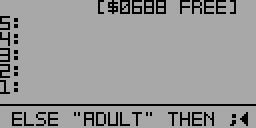

Marks an alternative block to be executed if an IF statement is false.
Must come between IF and THEN. Compile-only word
Example:
First, define a new word FOO:
: FOO 18 < IF "CHILD" ELSE "ADULT" THEN ;
Defining FOO (partial view)
FOO compares the first item on the stack to 18. If it's less, the string "CHILD" is pushed onto the stack. Otherwise, "ADULT" is pushed onto the stack.